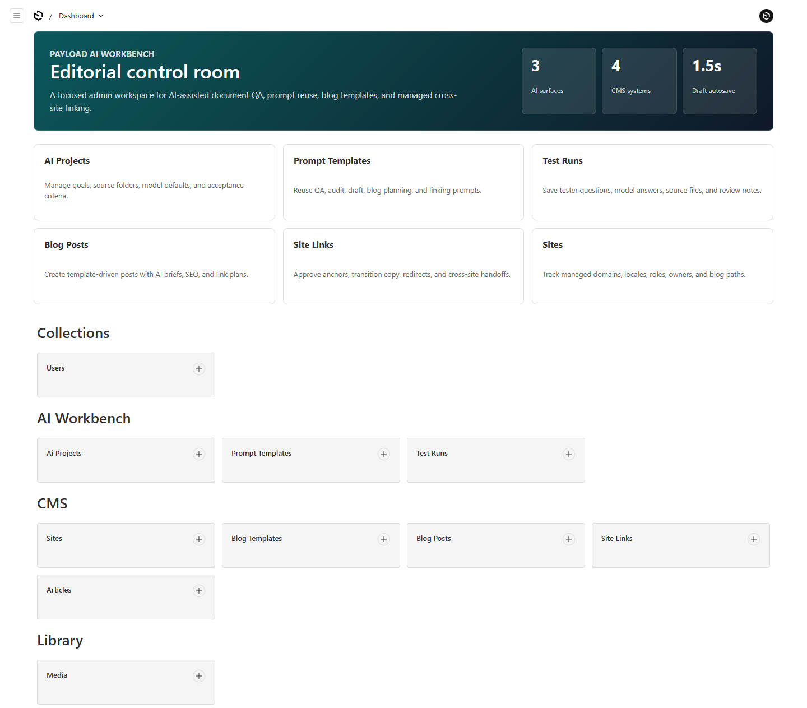
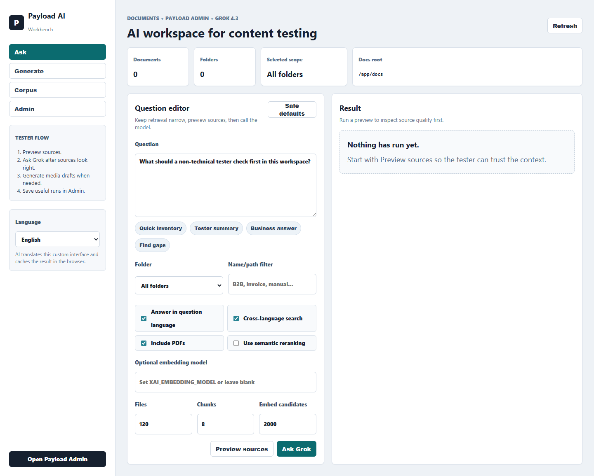
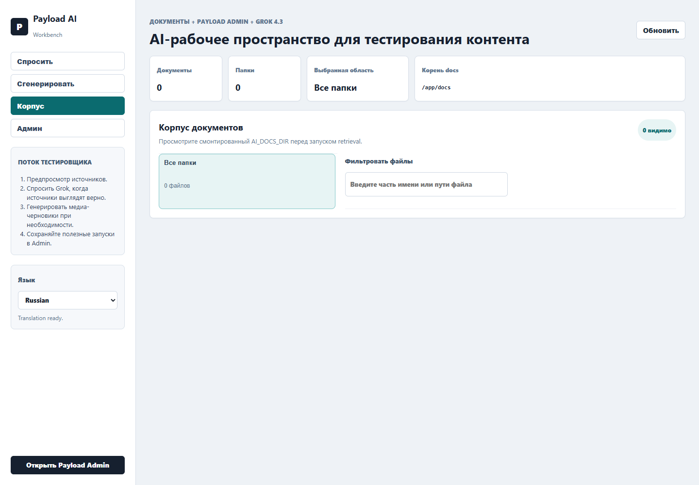
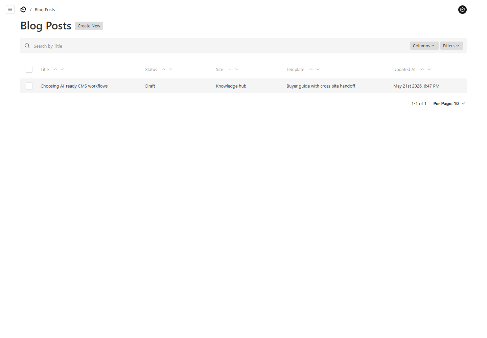
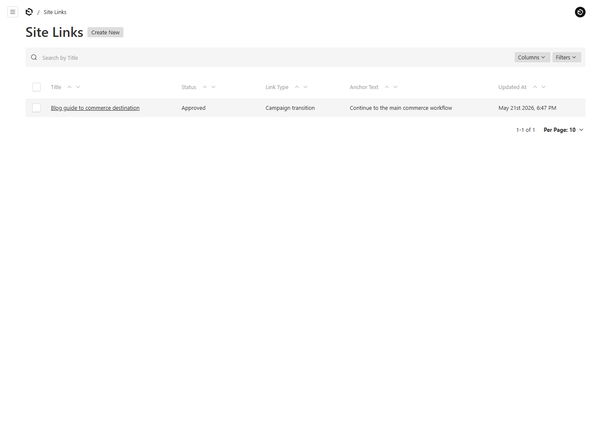

Это визуальная версия README для демонстрации заказчику. Она объясняет
не технический движок, а продукт: как связаны Payload Admin и AI
Workbench, зачем нужны коллекции, как проверять документы через RAG,
как готовить блог и управлять переходами между сайтами.
CMS AI объединяет управляемую CMS и AI-инструменты в один рабочий
контур. Редактор хранит контент, документы, сайты, шаблоны и ссылки в
Payload Admin. Тестировщик или контент-специалист использует AI
Workbench, чтобы задать вопрос по документам, проверить источники,
получить ответ, подготовить медиа-черновик и вернуться к CMS.
Payload Admin
Контролируемая база данных продукта.
Статьи, блог, сайты, медиа, шаблоны, тесты.
AI Workbench
Рабочая зона для AI-проверок.
Ask, Generate, Corpus, быстрые переходы в Admin.
RAG Corpus
Документы, по которым AI отвечает.
Seed docs плюс файлы, загруженные пользователем в Media.
Blog & Links
Система для контента и переходов.
Шаблоны, посты, related content, cross-site handoff.
В прототипе AI и админка не должны выглядеть как две отдельные части.
Связь сделана двусторонней: из AI есть быстрые переходы в Payload
Admin, а из Dashboard админки есть вход в AI Workbench и загрузку RAG
документов.
Media uploads
-> AI Workbench Corpus
-> Ask / RAG answers
-> Test Runs
Sites
-> Blog Posts
-> Site Links
Blog Templates
-> Blog Posts
-> AI Brief
Articles / Blog Posts
-> related content
-> Site Links sourceContent / targetContent

Dashboard админки служит входной точкой: AI Workbench, загрузка RAG
документов и ключевые коллекции находятся рядом.
5. AI Workbench
AI Workbench нужен не просто для чата. Он помогает тестировать
документы, контролировать источники и готовить черновики для CMS.
Интерфейс поддерживает 5 языков: English, Russian, Ukrainian,
Romanian, Polish.
Вкладка
Для чего нужна
Как связана с CMS
Ask
Вопросы к документам, выбор folder/filter, Preview sources, Ask.
Ответы и источники можно фиксировать в Test Runs.
Generate
Черновики изображений и видео для контента, статей, презентаций.
Готовые ассеты можно загрузить в Media и использовать в Articles/Blog Posts.
Corpus
Инвентаризация seed docs и пользовательских загрузок из Media.
Показывает, какие документы доступны RAG-поиску.
Admin
Быстрые переходы к AI Projects, Prompt Templates, Test Runs, Media и CMS-разделам.
Убирает ощущение, что AI живет отдельно от админки.

Ask начинается с проверки источников, а не сразу с генерации ответа.
6. Payload Admin
Payload Admin - это место, где продуктовые данные становятся
управляемыми: можно создавать записи, связывать их между собой,
загружать файлы, хранить SEO и фиксировать результаты AI-проверок.
Раздел
Смысл
Что показывает заказчику
AI Projects
Бизнес-контейнер для проверок.
Какая цель теста, кто владелец, какие критерии успеха.
Prompt Templates
Повторяемые инструкции для AI.
Промпты можно хранить и улучшать, а не держать в чате.
Test Runs
Журнал проверок.
Вопрос, ответ, источники, рейтинг и review notes сохраняются.
Sites
Карта управляемых сайтов.
Сайт имеет домен, язык, роль, статус и путь блога.
Blog Templates
Структура будущих публикаций.
Шаблоны управляют секциями, SEO и правилами ссылок.
Blog Posts
Конкретные блоговые материалы.
Пост связан с сайтом, шаблоном, SEO, related content и link plan.
Site Links
Управляемые переходы между сайтами.
Ссылка имеет источник, цель, anchor, placement, риск и rationale.
Media
Библиотека файлов и RAG-документов.
Пользователь загружает документы со своего диска через браузер.
7. Коллекции и поля
Ниже - справочник по ключевым коллекциям. Он нужен, чтобы заказчик
понимал назначение каждого раздела и связь полей с остальной системой.
AI Projects
AI Project описывает цель проверки или рабочей зоны. Это бизнес-контейнер
для тестов, а не технический проект разработки.
Поле
Для чего нужно
Связь
name
Название проекта или проверки.
Используется в Test Runs.
status
Planning, Testing, Ready или Paused.
Показывает готовность проверки.
owner
Ответственный человек или команда.
Помогает назначить владение результатом.
goal
Что нужно доказать проверкой.
Формирует бизнес-контекст для AI Workbench.
docsFolder
Рекомендуемая папка источников.
Подсказывает scope для Ask.
successCriteria
Критерии успеха.
Используются при оценке Test Runs.
notes
Внутренний контекст.
Помогает редактору или тестировщику.
Prompt Templates
Prompt Template хранит повторяемые инструкции, чтобы команда могла
переиспользовать лучшие AI-сценарии.
Поле
Для чего нужно
Связь
title
Название шаблона.
Отображается в списках и Test Runs.
isEnabled
Включен ли шаблон.
Позволяет архивировать без удаления.
mode
QA, Summary, Audit или Content draft.
Разделяет назначение шаблонов.
systemPrompt
Правила поведения AI.
Определяет роль, стиль, язык и работу с источниками.
userPrompt
Повторяемый текст запроса.
Можно использовать как основу Ask или автоматизации.
maxChunks
Желаемое количество фрагментов источников.
Соответствует контролю Chunks в Ask.
tags
Темы и области применения.
Упрощают поиск шаблонов.
Test Runs
Test Run - журнал проверки, где сохраняются вопрос, ответ, источники,
рейтинг и заметки ревьюера.
Поле
Для чего нужно
Связь
title
Название проверки.
Отображается в списке Test Runs.
project
Связь с AI Project.
Показывает, какой цели относится результат.
promptTemplate
Использованный шаблон.
Помогает повторить или улучшить тест.
status
New, Passed, Needs review или Failed.
Показывает состояние проверки.
rating
Good, Okay или Bad.
Быстрая оценка качества ответа.
question / answer
Что спрашивали и что ответил AI.
Фиксирует проверку для демонстрации.
sources
Файлы, пути и score источников.
Соответствует Preview sources в AI Workbench.
reviewNotes
Выводы редактора или тестировщика.
Используется для доработок.
Sites
Sites описывает управляемые сайты. Коллекция нужна для мультисайтового
контента и cross-site переходов.
Поле
Для чего нужно
Связь
name
Человеческое название сайта.
Используется в Blog Posts и Site Links.
slug
Стабильный ключ сайта.
Нужен для шаблонов, ссылок и правил.
status
Draft, Live, Paused или Archived.
Показывает состояние сайта.
primaryDomain
Канонический домен.
Используется для маршрутов и target URL.
locale
Язык сайта.
Важен для локализации и language-switch ссылок.
siteRole
Роль сайта.
Помогает принимать решения о линковке.
defaultBlogPath
Базовый путь блога.
Используется Blog Posts для URL-логики.
Blog Templates
Blog Template - шаблон статьи до написания текста. Он описывает
структуру, SEO, перелинковку и AI-подсказки.
Поле
Для чего нужно
Связь
title / key
Название и уникальный ключ шаблона.
Выбираются в Blog Posts.
templateType
Guide, News, Case study, Comparison и другие типы.
Определяет формат материала.
editorialGoal
Что помогает создать шаблон.
Объясняет редактору назначение.
titlePattern / summaryPattern
Формулы заголовка и summary.
Помогают планировать пост.
structure
Секции статьи, роли секций, инструкции.
Формирует outline и проверку полноты.
requiredInternalLinks
Минимум внутренних ссылок.
Связано с related content в Blog Posts.
requiredCrossSiteLinks
Минимум cross-site ссылок.
Связано с Site Links.
aiPrompts
Brief, outline и linking prompts.
Используются для AI-assisted workflow.
seo
Meta title, description и keyword guidance.
Подсказывает SEO-поля Blog Posts.
Blog Posts
Blog Post - конкретная публикация. Она связывает сайт, шаблон,
контент, AI Brief, SEO и link plan.
Поле
Для чего нужно
Связь
title / slug
Заголовок и URL-сегмент.
Работают вместе с Sites.defaultBlogPath.
status
Idea, Draft, In review, Scheduled или Published.
Управляет редакционным состоянием.
site
Сайт публикации.
Relationship к Sites.
template
Шаблон поста.
Relationship к Blog Templates.
summary / coverImage / content
Карточка, обложка и основной rich text.
Использует Media и редактор Payload.
SEO content blocks
HTML Embed, Product Card и FAQ внутри редактора.
Фронт выводит блоки и JSON-LD Article/BlogPosting/FAQPage/Product.
relatedArticles
Связанные статьи.
Relationship к Articles.
relatedPosts
Связанные посты.
Relationship к Blog Posts.
linkPlan
Утвержденные или предложенные ссылки.
Relationship к Site Links.
aiAssist
Brief, target keywords, questions, linking notes.
Мост между AI Workbench и редакционным процессом.
seo
SEO title, description и image.
Может опираться на Blog Template.
В Blog Posts включены drafts и autosave, поэтому редактор может
безопасно работать с черновиками и возвращаться к версиям.
Site Links
Site Link - управляемая запись перехода. Она нужна для contextual
links, CTA, redirect, language switch и transition-page сценариев.
Поле
Для чего нужно
Связь
title / status
Название и готовность ссылки.
Используется в linkPlan.
linkType
Contextual, Navigation, CTA, Redirect и другие типы.
Показывает, почему ссылка полезна и насколько она рискованна.
Articles
Articles - базовая библиотека контента: knowledge base, release
notes, internal guides и product content.
Поле
Для чего нужно
Связь
title / slug
Заголовок и URL-сегмент статьи.
Используются в related content и Site Links.
status / publishedAt
Редакционное состояние и дата публикации.
Нужны для истории и сортировки.
summary / coverImage
Короткое описание и обложка.
Используются в карточках и previews.
content
Rich text с headings, lists, links, uploads, HTML Embed, Product Card и FAQ.
Основной контент статьи плюс SEO-блоки и JSON-LD.
category / tags
Классификация и темы.
Поиск, фильтрация, планирование.
seo
SEO title, description и image.
Для поисковой выдачи и шаринга.
Media и Users
Коллекция
Для чего нужна
Ключевые поля и связи
Media
Общая библиотека файлов и точка загрузки RAG-документов.
file upload, alt, caption, externalImageURL, tags. Используется Articles, Blog Posts, SEO images и AI Corpus.
Users
Auth-коллекция Payload для входа в админку.
Email и пароль управляются auth-механикой Payload.
Поддерживаемые RAG-форматы в Media: PDF, TXT, Markdown, DOCX,
XLIFF, XML.
Для проверки AI media workflow тестовый блог использует hero image,
сгенерированный Grok Imagine и сохраненный как
/seo/grok-test-blog.jpeg. Эта картинка подставляется в
HTML, Open Graph и JSON-LD без зависимости от временного хранилища
Render Free.
8. Публичные frontend-страницы
Статус Published теперь дает не только редакционный статус в админке,
но и публичный frontend-адрес. В sidebar у Articles и Blog Posts есть
read-only поле Public URL, а для опубликованных записей работает
preview-ссылка из edit view.
Тип
URL
Откуда берется
Список статей
/articles
Все Articles со статусом Published.
Статья
/articles/{articleSlug}
Поле slug в Articles.
Список постов
/blog
Все Blog Posts со статусом Published.
Пост, короткий URL
/blog/{postSlug}
Поле slug в Blog Posts.
Пост с учетом сайта
/sites/{siteSlug}{defaultBlogPath}/{postSlug}
Sites.slug, Sites.defaultBlogPath и Blog Posts.slug.
9. Загрузка документов для RAG
Пользователь, которому вы даете ссылку на сервис, сможет загрузить
документы со своего диска через браузер. Это не привязано к вашему
локальному компьютеру. Файл отправляется в Media текущего сервиса, а
затем появляется в AI Workbench -> Corpus в группе Uploaded media.
Как тестировать:
открыть /admin, перейти в Media, загрузить файл,
открыть /ai, перейти в Corpus и нажать Refresh.
Важно для Render free:
локальные загрузки подходят для прототипа, но могут исчезнуть после
restart или redeploy. Для production нужен постоянный storage:
Render Disk, S3 или аналог.

Corpus показывает seed docs и документы, которые пользователи
загрузили через Media.
10. Блог, шаблоны и перелинковка
Блоговая часть нужна не только для хранения постов. Она задает
управляемый процесс: сайт -> шаблон -> пост -> related content ->
link plan -> Site Links. Благодаря этому можно объяснить, зачем
существует каждая часть системы и как она участвует в публикации.

Blog Posts связывает сайт, шаблон, контент, AI Brief, SEO и link plan.

Site Links превращает ссылки между сайтами в управляемые записи.
11. Demo script
Открыть /admin и показать Dashboard с кнопками AI Workbench и Upload RAG documents.
Открыть Media, загрузить тестовый PDF или DOCX со своего компьютера.
Открыть /ai, перейти в Corpus, нажать Refresh и показать Uploaded media.
Перейти в Ask, выбрать scope, нажать Preview sources и объяснить найденные фрагменты.
Нажать Ask, получить ответ и показать, где можно сохранить результат в Test Runs.
Открыть Sites, Blog Templates, Blog Posts и Site Links, объяснить связь сайта, шаблона, поста и link plan.
Загрузки в локальную папку контейнера могут быть временными: запись Media остается, а файл может исчезнуть.
Для небольших новых изображений есть database fallback; для production подключить Render Disk, S3, R2 или другой постоянный storage.
Общий прототип
Файлы, загруженные пользователями, попадают в одну Media-библиотеку сервиса.
Добавить роли, ownership, tenant/site scope и ACL.
AI-провайдер
Провайдер является инфраструктурной заменяемой частью.
Сохранять продуктовую модель данных и менять adapter при необходимости.
Уже потерянный файл восстановить из filename нельзя. Нужно загрузить изображение заново.
После этого небольшие изображения дополнительно сохраняются в Postgres как fallback для Render free.